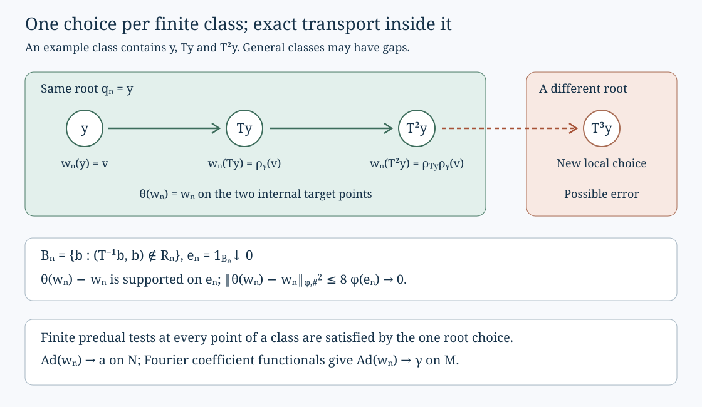

Module triviality and inner approximation
For a separable approximately finite-dimensional factor of type \(\mathrm{III}_0\), an automorphism is approximately inner exactly when its module is trivial. We prove the sufficiency by choosing inner implementers coherently on finite pieces of the return orbits. The boundaries of those pieces shrink to zero, so the implementers become invariant under the return automorphism. Fourier coefficient functionals then establish convergence on the entire crossed product.
The same finite pieces also solve the central-sequence cocycle equation without assuming that the return automorphism preserves a chosen auxiliary state.
The theorem and the discrete setting
Let \(M\) be a nonzero AFD factor with separable predual of type \(\mathrm{III}_0\). We use the \(u\)-topology
\[ \alpha_n\longrightarrow\alpha \quad\Longleftrightarrow\quad \|\eta\alpha_n-\eta\alpha\|\longrightarrow0 \quad(\eta\in M_*). \tag{MAI.1} \]AFD means generated by an increasing sequence of finite-dimensional algebras. The theorem is
\[ \ker(\operatorname{mod})=\overline{\operatorname{Inn}(M)}. \tag{MAI.2} \]The bar denotes closure in (MAI.1). It cannot be omitted.
For the sufficiency assume \(\operatorname{mod}(\alpha)=\mathrm{id}\). EDD01–09 supplies a unitary \(u_0\in M\) and a presentation
\[ \begin{gathered} M=N\rtimes_\theta\mathbb Z,\qquad UxU^*=\theta(x),\\ \gamma=\operatorname{Ad}(u_0)\alpha,\qquad \gamma|_N=a,\qquad \gamma(U)=U,\\ a\theta=\theta a,\qquad a|_{Z(N)}=\mathrm{id},\qquad \tau a=\tau. \end{gathered} \tag{MAI.3} \]Here \(N\) is semifinite of type \(\mathrm{II}_\infty\), with separable predual, and \(\tau\) is a specified faithful normal semifinite trace. Its center is a standard probability algebra \(L^\infty(X,\mu)\). The action of \(\theta\) on the center is \(f\mapsto f\circ T^{-1}\), where \(T\) is an aperiodic ergodic nonsingular transformation with nonatomic base. These properties follow from the return construction in EDD04–06, including its coarse-type identification.
We use the full field and trace identifications in FWC01–04, the nonsingular towers and finite exhaustion in AFM03, normal functional representations in CP04–06, and canonical implementations in CL01. The general nonfactor asymptotic-centralizer construction is the quotient proof in Section 3 of Trace scaling on the hyperfinite semifinite factor. Its quotient automorphism need not preserve the auxiliary trace. Sections 7–9 below retain this distinction.
The whole coefficient field and its automorphisms
The algebra \(N\) is injective. Indeed \(M\) is injective by the AFD-to-injectivity proof used in FWC01. Compose a unital completely positive retraction onto \(M\) with the coefficient expectation \(E:M\to N\). The composition fixes \(N\), giving injectivity in its represented inclusion. The normal expectation exists in the actual regular integer crossing of (MAI.3).
The proof of FWC01–03 applies to this \(N\) with its specified trace: its inputs after constructing the core are precisely separable predual, injectivity and the unrestricted type \(\mathrm{II}_\infty\) property. To spell out the application, the properly infinite injective approximation theorem gives increasing matrix algebras generating \(N\). Central decomposition localizes those generators and the trace. The two global isometries and the absence of abelian projections identify the fibers as type \(\mathrm{II}_\infty\). Each finite trace corner is an injective \(\mathrm{II}_1\) factor, hence the tracial matrix product \(R\). The complete projection comparison and filling argument in FWC01 identifies each full fiber with
\[ Q=R\bar\otimes B(\ell^2). \]FWC02 selects whole standard-form isomorphisms measurably, and FWC03 adjusts their trace multipliers. We obtain, on the full algebras and positive cones,
\[ N=L^\infty(X,\mu)\bar\otimes Q,\qquad \tau(x)=\int_X\tau_Q(x(b))\,d\mu(b). \tag{MAI.4} \]This includes all bounded measurable \(Q\)-fields and has a normal inverse. The measure \(\mu\) may be chosen to be a probability; the trace adjustment is part of the isomorphism.
The center-fixing automorphism \(a\) has a Borel field \(a_b\in\operatorname{Aut}(Q)\). The automorphism \(\theta\) has Borel transports
\[ (\theta x)(Tb)=\rho_b(x(b)),\qquad a_{Tb}\rho_b=\rho_b a_b. \tag{MAI.5} \]Here is the measurable justification. The base pullback \(x(b)\mapsto x(T^{-1}b)\) is a normal automorphism of the whole tensor algebra. Composing its inverse with \(\theta\) leaves an automorphism fixing the base. Its canonical standard implementer commutes with that base and is decomposable. The full standard-form field theorem and its canonical-transport theorem identify the resulting normal fiber isomorphisms as a Borel field. The same applies to \(a\). Localize commutation on a countable strong-star dense family in \(Q_1\), and remove its countably many exceptional sets and their \(T\)-translates. On the retained invariant conull set, (MAI.5) and all integer composition identities hold simultaneously.
Each \(a_b\) preserves \(\tau_Q\). An automorphism of the semifinite factor \(Q\) scales its trace by a positive finite scalar, say \(c(b)\). FWC04 makes that scalar Borel by evaluation at one fixed trace-one projection \(p\). Since \(a\) fixes the base and \(\tau a=\tau\), testing \(1_A\otimes p\) for every Borel \(A\subset X\) gives
\[ \int_A c(b)\,d\mu(b)=\mu(A). \]Thus \(c=1\) almost everywhere. The trace-preserving approximation proof Proposition 5.1 of Trace scaling now gives
\[ a_b\in\overline{\operatorname{Inn}(Q)}. \tag{MAI.6} \]It first matches a finite corner, fixes its complete matrix units by a strong unitary sum, and applies inner approximation in \(R\). Its assertion is approximation in the predual norm topology; it makes no claim that every \(a_b\) is inner.
Finite orbit pieces with a measurable root
The finite exhaustion in AFM03 can be chosen with bounded integer span at each stage. Its finite approximants \(H_n\) are the orbit relations of cyclic transformations obtained from finite \(T\)-towers; outside their towers the classes are singletons. Thus each \(H_n\)-class lies in a \(T\)-orbit segment of some fixed finite length \(L_n\). Choose the errors for all powers \(|j|\le n\) to have source measure below \(2^{-n}\), and set
\[ \mathcal R_n=\bigcap_{k\ge n}H_k. \tag{MAI.7} \]These are increasing finite Borel equivalence relations, each contained in \(H_n\). For any fixed power \(T^j\), the missing graph has source measure at most \(\sum_{k\ge n}2^{-k}\) once \(n\ge|j|\). The increasing union therefore contains that graph almost everywhere. Remove the countable union of exceptions and its null \(T\)-saturation. On the resulting invariant conull base,
\[ \bigcup_n\mathcal R_n=\mathcal R_T \quad\text{exactly}. \tag{MAI.8} \]This retains the construction of AFM03 rather than assuming the original finite approximants were nested.
Fix an injective Borel code of \(X\) into \([0,1]\). In each finite \(\mathcal R_n\)-class let \(q_n(b)\) be the point with the least code. It is Borel: the candidates are among the finitely many \(T^j b\), \(|j|\le L_n\), and membership in \(\mathcal R_n\) and comparison of codes are Borel. Aperiodicity gives a unique Borel integer \(j_n(b)\), with \(|j_n(b)|\le L_n\), such that
\[ b=T^{j_n(b)}q_n(b). \tag{MAI.9} \]Enlarging \(L_n\) if necessary accommodates the harmless endpoint convention.
The target boundary is
\[ B_n=\{b:(T^{-1}b,b)\notin\mathcal R_n\},\qquad e_n=1_{B_n}\in Z(N). \tag{MAI.10} \]It decreases to the empty set on the retained base. Hence \(e_n\downarrow0\) in \(N\). Outside \(B_n\),
\[ q_n(T^{-1}b)=q_n(b),\qquad j_n(b)=j_n(T^{-1}b)+1. \tag{MAI.11} \]No invariant probability measure for \(T\) has been assumed. Normality gives \(\varphi(e_n)\to0\) for every normal positive functional \(\varphi\) on \(N\).
Choose inner implementers consistently on each piece
Let \((\eta_i)\) be norm dense in the unit ball of \(Q_*\), and choose a countable strongly dense family \((v_l)\) in \(\mathcal U(Q)\). The strong topology on this unitary group also controls adjoints. Canonical implementation, or direct vector-functional estimates, makes \(v\mapsto\operatorname{Ad}(v)\) continuous into the \(u\)-topology.
For a root \(y=q_n(y)\) and \(b=T^j y\) in its class, write \(\rho_{j,y}:Q\to Q\) for the transport of \(\theta^j\). Select the first \(v_l\) satisfying, simultaneously for all members \(b\) of the class and \(1\le i\le n\),
\[ \left\| \eta_i\operatorname{Ad}(\rho_{j,y}(v_l))-\eta_i a_b \right\|<\frac1n. \tag{MAI.12} \]Such a choice exists. By (MAI.5), its left side equals
\[ \left\|(\eta_i\rho_{j,y}) \bigl(\operatorname{Ad}(v_l)-a_y\bigr)\right\|. \]There are finitely many normal-functional tests at the root. Equation (MAI.6) provides a unitary satisfying all of them strictly, and strong density and continuity provide one from the countable family.
The first-successful index is Borel. The integer transports are Borel by (MAI.5). A norm in (MAI.12) is the supremum of its absolute values on a fixed countable strong-star dense subset of \(Q_1\); normal functionals are continuous for bounded strong-star convergence. Thus each test is Borel. The class has bounded finite enumeration by powers of \(T\), so the simultaneous tests are still Borel.
Denote the selected unitary by \(v^{(n)}(y)\), and define the full bounded field
\[ w_n(b)=\rho_{j_n(b),q_n(b)}\bigl(v^{(n)}(q_n(b))\bigr). \tag{MAI.13} \]It is measurable and unitary, hence an element of \(\mathcal U(N)\) by the full field realization in (MAI.4). Equations (MAI.5) and (MAI.11) give
\[ (\theta(w_n)-w_n)(1-e_n)=0,\qquad \|\theta(w_n)-w_n\|\le2. \tag{MAI.14} \]Since \(e_n\) is central, both squared absolute values of this difference are at most \(4e_n\). Therefore
\[ \theta(w_n)-w_n\longrightarrow0 \quad\text{strongly-star}. \tag{MAI.15} \]Also \(\operatorname{Ad}(w_n)\to a\) in the \(u\)-topology of \(N\). For \(g\in L^1(X,\mu)\) and \(i\le n\), integrate (MAI.12):
\[ \left\|(g\otimes\eta_i)\operatorname{Ad}(w_n) -(g\otimes\eta_i)a\right\| \le\frac{\|g\|_1}{n}. \tag{MAI.16} \]Finite sums of these normal functionals are norm dense in \(N_*\). Indeed represent \(N\) on \(L^2(X)\otimes H_Q\), approximate each Hilbert vector by finite sums of simple tensor vectors, and use CP04–06's norm-dense vector-series representation of normal functionals. Their coefficient functionals are the indicated products. The uniform bound two on a difference of automorphism pullbacks extends (MAI.16) to all of \(N_*\).

The diagram illustrates one class containing three consecutive return points. General classes may have gaps; (MAI.9) uses the actual signed offset from the root. The error in (MAI.14) is supported inside the target boundary from (MAI.10).
Convergence on the entire crossed product
This step is valid for any normal integer crossed product. Define
\[ C_k(X)=E(XU^{-k}),\qquad f_{k,\eta}=\eta C_k \quad(k\in\mathbb Z,\ \eta\in N_*). \tag{MAI.17} \]Each \(C_k\) is normal and contractive. These functionals have norm-dense linear span in \(M_*\). To prove this, the dual circle action has Fourier coefficient \(C_k(X)U^k\). Its Fejér averages converge ultraweakly to \(X\), by the circle approximate identity applied to each normal-functional orbit coefficient. Hence all \(C_k(X)=0\) imply \(X=0\). The annihilator of their span is zero, and Hahn–Banach gives the asserted predual norm density. This controls suprema over the whole unit ball, not only individual Fourier polynomials.
For \(w\in\mathcal U(N)\), bimodularity and covariance give
\[ C_k(wXw^*)=w C_k(X)\theta^k(w^*),\qquad C_k(\gamma(X))=a(C_k(X)). \tag{MAI.18} \]For each fixed integer \(k\), telescoping (MAI.15), using the fixed normal automorphisms \(\theta^j\), gives
\[ d_{n,k}=\theta^k(w_n^*)-w_n^*\longrightarrow0 \quad\text{strongly-star}. \]The functional-module convention is \((d\eta)(x)=\eta(xd)\). From (MAI.18),
\[ \|f_{k,\eta}\operatorname{Ad}(w_n)-f_{k,\eta}\gamma\| \le \|\eta\operatorname{Ad}(w_n)-\eta a\|+\|d_{n,k}\eta\|. \tag{MAI.19} \]In the second term, \(w_nC_k(X)\) ranges inside the unit ball, so no convergence of a moving functional is being presumed. If \(\eta\ge0\), Cauchy–Schwarz bounds that module norm by \(\eta(1)^{1/2}\eta(d_{n,k}^*d_{n,k})^{1/2}\). The positive spanning of normal functionals gives convergence for arbitrary \(\eta\). Thus (MAI.19) tends to zero. Predual density and the uniform isometry bound give
\[ \operatorname{Ad}(w_n)\longrightarrow\gamma \quad\text{in }\operatorname{Aut}(M). \tag{MAI.20} \]Multiplying the implementers by \(u_0^*\) proves approximate innerness of the original \(\alpha\).
Necessity and arbitrary initial approximants
Conversely, suppose \(\alpha\) is approximately inner. MCC01 proves \(u\)-continuity of canonical extension, for nets as well as sequences, and identifies the extension of \(\operatorname{Ad}(v)\) with \(\operatorname{Ad}(\pi(v))\). Each fixes the entire core center. Their limit fixes every central element by point-ultraweak convergence. Hence \(\operatorname{mod}(\alpha)=\mathrm{id}\), proving (MAI.2).
We record the assertions for an arbitrary initial sequence \(u_n\in\mathcal U(N)\) with \(\operatorname{Ad}(u_n)\to a\). The \(u\)-topology is a group topology: the triangle inequality and the isometry of automorphism pullbacks prove continuity of multiplication and inversion, or one may use CL01. Since \(a\theta=\theta a\),
\[ \operatorname{Ad}(u_n\theta(u_n^*)) =\operatorname{Ad}(u_n)\theta \operatorname{Ad}(u_n)^{-1}\theta^{-1} \longrightarrow\mathrm{id}. \tag{MAI.21} \]For any unitary \(z\), direct right multiplication of the unit-ball test gives
\[ \|[z,\eta]\|=\|\eta\operatorname{Ad}(z)-\eta\|. \tag{MAI.22} \]Thus \(u_n\theta(u_n^*)\) is a centralizing unitary sequence.
The coherent sequence \(w_n\) from Section 4 also approximates \(a\) on \(N\). Put \(v_n=w_nu_n^*\). Then \(\operatorname{Ad}(v_n)\to\mathrm{id}\), so \(v_n\) is centralizing, and
\[ v_nu_n=w_n,\qquad \operatorname{Ad}(v_nu_n)\longrightarrow\gamma \quad\text{on the whole }M. \tag{MAI.23} \]This proves the required correction while keeping the original coordinate paired. It also proves parts (c), (d) and (e) of Exercise XVIII.2.1; Sections 7–9 supply parts (a) and (b).
Cyclic partitions in the center ultrapower
Put \(C=Z(N)=L^\infty(X,\mu)\), and fix a free ultrafilter \(\omega\) on \(\mathbb N\). Its ultrapower \(C^\omega\) is the bounded sequence algebra modulo sequences tending strongly-star to zero along \(\omega\). On this commutative algebra the null condition is equivalently convergence to zero in the \(L^2\)-norm of the faithful probability \(\mu\), for bounded sequences.
For every integer \(m\ge1\), there is a partition of unity \(F_0,\ldots,F_{m-1}\) in \(C^\omega\) such that
\[ \theta_\omega(F_j)=F_{j+1\bmod m}. \tag{MAI.24} \]For \(m=1\) take \(F_0=1\). For larger \(m\), the AFM03 construction supplies cyclic approximants \(S_l\) whose nontrivial cycles all have a common length divisible by \(m\), whose fixed complement has \(\mu\)-measure tending to zero, and for which
\[ \mu\{S_l^{-1}\ne T^{-1}\}\longrightarrow0. \tag{MAI.25} \]Indeed choose the tower height \(qm\), make its complement and the finitely many required translates arbitrarily small, and use the two boundary bands in AFM.9–10. Their averaging makes the errors of both positive and negative first powers small. The height can be made arbitrarily large while remaining divisible by \(m\).
Assign successive residues modulo \(m\) around each nontrivial \(S_l\)-cycle, using its Borel least point as the start. Put the fixed complement into the zeroth part. This gives an exact Borel partition \(p_{0,l},\ldots,p_{m-1,l}\) of \(1\). The difference between \(\theta(p_{j,l})\) and \(p_{j+1,l}\) is supported in the union of the fixed complement and \(\{S_l^{-1}\ne T^{-1}\}\). Its squared \(L^2\)-norm tends to zero by (MAI.25). Their classes give (MAI.24).
Central coordinate sequences commute with every normal functional on \(N\), and their strong-star null condition is detected by the restriction of any faithful state to \(C\). Thus \(C^\omega\) embeds into the center of the asymptotic centralizer \(N_\omega\), compatibly with \(\theta_\omega\). Equation (MAI.24) does not say that the parts have equal value under an arbitrary auxiliary state: \(\theta_\omega\) need not preserve that state.
The nonfactor quotient and exact unitary lifts
For this section let \(N\) be any nonzero von Neumann algebra with separable predual. Write
\[ \begin{aligned} \mathcal C_\omega(N) &=\{(x_l):\sup_l\|x_l\|<\infty,\ \|[x_l,\eta]\|\to_\omega0\ \text{for all }\eta\in N_*\},\\ \mathcal J_\omega(N) &=\{x\in\mathcal C_\omega(N):x_l\to_\omega0 \text{ strongly-star}\},\\ N_\omega&=\mathcal C_\omega(N)/\mathcal J_\omega(N). \end{aligned} \tag{MAI.26} \]The nonfactor quotient proof cited in Section 1 constructs this actual quotient as a finite von Neumann algebra. In detail, for a faithful normal state \(\varphi\), centrality makes \(t_\varphi(x)=\lim_\omega\varphi(x_l)\) tracial on \(\mathcal C_\omega(N)\); its square-null ideal is exactly \(\mathcal J_\omega(N)\). The same-coordinate diagonal argument proves completeness of the quotient unit ball in its tracial \(2\)-norm, so its left representation is already strongly closed. No additional von Neumann closure is adjoined. Normal automorphisms of \(N\) preserve both algebras in (MAI.26), and induce normal automorphisms of the quotient. They need not preserve the particular trace \(t_\varphi\).
Every unitary \(u\in N_\omega\) has an exactly unitary centralizing representative. The bounded Borel spectral calculus in this von Neumann algebra gives a self-adjoint \(h\) with \(\|h\|\le\pi\) and \(u=e^{ih}\). By surjectivity of the quotient map choose a bounded representative of \(h\) in \(\mathcal C_\omega(N)\), and replace it by its self-adjoint part, denoted \(h_l\). Continuous functional calculus in this unital \(C^*\)-algebra gives
\[ u_l=e^{ih_l}\in\mathcal U(N),\qquad [(u_l)]=u. \tag{MAI.27} \]This uses the Borel logarithm in the already constructed quotient and the continuous exponential on its lift. It requires no claim that an arbitrary quotient of a \(C^*\)-algebra lifts all unitaries.
Every central-sequence unitary is a return coboundary
Return to (MAI.3) and fix \(u\in\mathcal U(N_\omega)\). Choose the representative (MAI.27). For each coordinate \(l\), define the integer unitary cocycle of \(u_l^*\) by
\[ d_{0,l}=1,\qquad d_{j+1,l}=u_l^*\theta(d_{j,l})\quad(j\in\mathbb Z). \tag{MAI.28} \]This recursion determines the negative integers as well, using \(\theta^{-1}\); for example \(d_{-1,l}=\theta^{-1}(u_l)\). Each fixed \(d_{j,l}\) is a finite product of fixed translates of \(u_l\) and \(u_l^*\), so \((d_{j,l})_l\) is centralizing by (MAI.26) and automorphism covariance.
Use the finite root offsets from Section 3, and set
\[ p_{n,j}=1_{\{b:j_n(b)=j\}}\in C,\qquad t_{n,l}=\sum_{j=-L_n}^{L_n}p_{n,j}d_{j,l}. \tag{MAI.29} \]These are unitaries because the \(p_{n,j}\) are orthogonal central projections summing to one. For each fixed \(n\), the sequence \((t_{n,l})_l\) is centralizing: there are finitely many fixed central multipliers and fixed words. On the complement of \(B_n\), (MAI.11) and (MAI.28) give
\[ \theta(t_{n,l})=u_l t_{n,l}. \tag{MAI.30} \]One can verify this in the field (MAI.4): at \(b\), the term of \(\theta(t_{n,l})\) comes from \(j_n(T^{-1}b)=j_n(b)-1\), and \(u_l\ d_{j_n(b),l}=\theta(d_{j_n(b)-1,l})\). Therefore the difference in (MAI.30), globally, has norm at most two and is supported on the central projection \(e_n\). For the unnormalized sharp seminorm,
\[ \|\theta(t_{n,l})-u_l t_{n,l}\|_{\varphi,\#}^2 \le8\varphi(e_n),\qquad \|x\|_{\varphi,\#}^2=\varphi(x^*x)+\varphi(xx^*). \tag{MAI.31} \]The bound is uniform in the original coordinate \(l\).
Choose a norm-dense sequence \((\zeta_i)\) in \(N_*\). For each \(n\), centrality of the fixed-stage sequence gives \(A_n\in\omega\) on which
\[ \|[t_{n,l},\zeta_i]\|<1/n\quad(i\le n). \]Replace these sets successively by their intersections with \(A_{n-1}\) and \(\{l\ge n\}\). Let \(n(l)\) be the largest \(n\le l\) for which \(l\in A_n\), using stage zero with \(t_{0,l}=1\) if no such \(n\) exists. Then \(n(l)\to_\omega\infty\). Set \(t_l=t_{n(l),l}\). The finite predual tests and their norm density prove that \((t_l)\) is centralizing. Equations (MAI.10) and (MAI.31) prove
\[ \theta(t_l)-u_l t_l\longrightarrow_\omega0 \quad\text{strongly-star}. \]Consequently \(v=[(t_l)]\) is unitary in the actual quotient and
\[ \boxed{\ \theta_\omega(v)=uv.\ } \tag{MAI.32} \]The original coordinate of \(u_l\) has never been changed independently of its correction. No trace preservation of \(\theta_\omega\) was used. This proves Exercise XVIII.2.1(b); together with Section 7 it completes all five parts of that exercise.
Exercises with solutions
1. Locate the source obligations. Which statements above prove the five parts of Exercise XVIII.2.1 and Exercise XVIII.2.2(a)?
Solution. Equation (MAI.24) proves part (a); (MAI.32) proves part (b). Equations (MAI.12)–(MAI.16) prove (c), (MAI.21)–(MAI.22) prove (d), and (MAI.19)–(MAI.23) prove (e). Theorem (MAI.2), with necessity in Section 6, proves Exercise 2(a). Module surjectivity, splitting and the centrally trivial kernel are separate statements.
2. Why retain the target boundary?
Solution. At the target \(b\), \(\theta(w)(b)\) reads the coefficient at \(T^{-1}b\). It agrees with \(w(b)\) when those two points have the same root. Thus the error is supported inside \(B_n\) from (MAI.10). The source boundary is its \(T^{-1}\)-translate. A nonsingular transformation need not preserve their measures, so they cannot be interchanged in a numerical estimate.
3. Check a negative cocycle word.
Solution. The recursion at \(j=-1\) gives \(1=u_l^*\theta(d_{-1,l})\), hence \(d_{-1,l}=\theta^{-1}(u_l)\). A second backward step gives
\[ d_{-2,l}=\theta^{-1}(u_l)\theta^{-2}(u_l). \]Substitution into (MAI.28) verifies its order. The negative offsets in (MAI.29) are therefore handled by actual inverse iterates.
4. Is approximate innerness on \(N\) alone enough for this extension argument?
Solution. Formula (MAI.18) contains \(\theta^k(w_n^*)\), not \(w_n^*\). An approximation on \(N\) controls the first term in (MAI.19) only. The coherent finite-class construction supplies the second through (MAI.14)–(MAI.15), which is why the full crossed-product conclusion follows.
5. Relate the cocycle convention to a left correction.
Solution. If \(z_n=u_n\theta(u_n^*)\) and \(w_n=v_nu_n\), then
\[ w_n\theta(w_n^*)=v_nz_n\theta(v_n^*). \]In the quotient this becomes one when \(\theta_\omega(v)=vz\). Apply (MAI.32) to \(z^*\), obtaining \(\theta_\omega(t)=z^*t\), and take \(v=t^*\). Then \(\theta_\omega(v)=vz\). Interchanging the two factors would give a different equation. Section 6 constructs an ordinary sequence correction directly, with the same coordinate pairing and full predual convergence.
The source statements are M. Takesaki, Theory of Operator Algebras III (2003), XVIII.2, Theorem 2.8(i), printed p.326, and Exercises 1(a)–(e) and 2(a), printed p.328. New exposition and SVG diagram: CC0-1.0, authored by OpenAI Codex (AI).